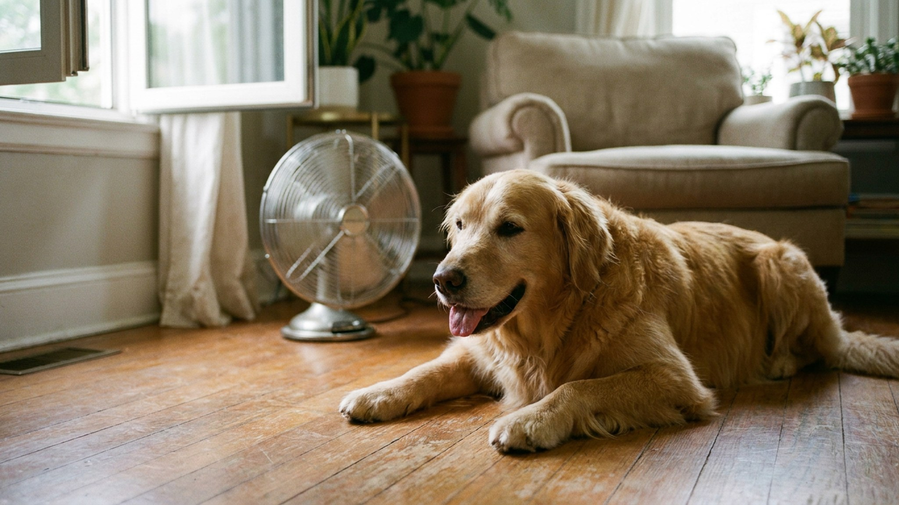

Кондиционер и вентилятор летом: 5 правил для дома с питомцем

7 июня 2026 · 8 минут чтения · Лето / Быт
«Сквозняк убьёт кошку» — это не ветеринарный факт, это городская легенда. Реальные риски от кондиционера и вентилятора для питомцев другие, менее очевидные — и при этом легко устранимые. Пять правил, которые позволят использовать любую охлаждающую технику летом без вреда для животных.
Миф о сквозняке — откуда он и почему неверен
«Открытое окно + кондиционер = застуженная кошка» — эту идею транслировали бабушки, она живёт в интернете. Но физиология говорит другое.
Здоровая кошка или собака с нормальным иммунитетом не «застывает» от движения воздуха или умеренно прохладной температуры. Инфекционные заболевания вызываются патогенами, а не сквозняком. Переохлаждение как фактор, снижающий иммунитет, — реально, но требует экстремальных условий: долгого пребывания на холоде, намокания при низкой температуре.
Нормально работающий кондиционер на температуре 24–26 градусов в квартире — не холод для кошки. Это комфортный диапазон для большинства пород.
Правило 1. Перепад температуры важнее самой температуры
Вот что реально может вызвать проблемы: резкий перепад между улицей и квартирой. Животное разогрето на прогулке (35–40 градусов на улице) и попадает в комнату с 18 градусами под прямой поток кондиционера.
Что делать:
- Не направляйте поток кондиционера прямо на место отдыха питомца.
- Держите температуру в квартире не ниже 22–23 градусов, когда питомец дома.
- После прогулки в жару — дайте животному несколько минут «перейти» в прохладу постепенно, не загоняйте сразу под кондиционер.
- Всегда оставляйте животному возможность выйти из зоны охлаждения — закрытая комната с кондиционером без выхода — это уже некомфортно.
Правило 2. Пересушенный воздух — реальный риск
Кондиционер охлаждает воздух, осушая его. В квартире с работающим кондиционером влажность может падать ниже 30–40%, особенно в старых моделях. Это влияет на слизистые оболочки — носа, глаз, дыхательных путей — у людей и животных.
Признаки сухости воздуха у питомцев:
- Кошка часто щурится, глаза выглядят немного мутными или красноватыми по краям.
- Питомец пьёт больше, чем обычно.
- Шерсть становится немного тусклее, появляется электростатика.
- Кошка или собака чаще чихает.
Что делать: использовать увлажнитель воздуха рядом с кондиционером. Целевая влажность — 50–60%. Это комфортно и для людей, и для животных. Убедитесь, что миска с водой всегда полна и доступна.
Правило 3. Вентилятор и лапы — физическая безопасность
Напольный вентилятор — отдельная история. Кошки нередко садятся рядом с ними, тыкают лапой в решётку или пытаются поймать лопасти.
- Лопасти большинства бытовых вентиляторов защищены решёткой с зазором 5–8 мм. Кошачья лапа туда не пролезет — но коготь может. Следите за тем, чтобы кошка не «охотилась» на вентилятор активно.
- Напольный вентилятор с широкими лопастями и крупной решёткой — безопаснее, чем старые модели с узкими зазорами.
- Не оставляйте работающий вентилятор без присмотра в комнате с котёнком — котята менее осторожны и более любопытны.
Правило 4. Провода и техника — среда вокруг
Кондиционер и вентилятор — это кабели питания. Кошки любопытны, молодые собаки жуют. Провод под напряжением — серьёзный риск.
Что делать:
- Закрывайте провода кабель-каналами или прячьте за мебелью.
- Провода не должны лежать на полу в зоне доступа питомца.
- Если собака или кошка проявляет интерес к кабелям — это поведенческая задача (перенаправление на жевательные игрушки, горькие спреи-репелленты), а не повод игнорировать риск.
Правило 5. Миска воды — всегда полная, в нескольких местах
Летом потребность в воде у питомцев растёт. Кондиционер, который сушит воздух, усиливает это. Несколько мисок с водой в разных комнатах — простейший и эффективнейший инструмент профилактики обезвоживания.
- Кошки предпочитают проточную воду — поилки-фонтанчики существенно увеличивают потребление воды у кошек, которые пьют мало.
- Не ставьте миску с водой рядом с миской с едой — кошки эволюционно избегают воды вблизи добычи (риск загрязнения).
- Меняйте воду ежедневно — тёплая стоячая вода хуже, чем свежая.
Как питомцы переносят жару: что нормально, что нет
Нормально в жаркую погоду:
- Кошка растянулась на прохладном полу — это терморегуляция, норма.
- Собака дышит с открытым ртом (пантинг) — это основной механизм отдачи тепла у собак.
- Питомец ищет тень и прохладные места — разумное поведение.
- Снижение активности в самую жаркую часть дня — норма для многих животных.
Обратите внимание — повод показаться ветеринару:
- Собака дышит тяжело даже в прохладе, в покое, на протяжении длительного времени.
- Питомец вялый, не реагирует на привычные стимулы, отказывается от воды и еды.
- Кошка или собака шатается, теряет координацию.
- Дёсны и язык выглядят очень бледными или, наоборот, ярко-красными.
Это признаки того, что организм не справляется с температурной нагрузкой — нужна ветеринарная помощь, не наблюдение дома.
Безопасные позы для жары: что помогает питомцу охладиться
Дайте животному возможность найти прохладное место самостоятельно:
- Кафельный или каменный пол — отдаёт прохладу через лапы и живот при растяжке.
- Охлаждающий коврик — гелевые или с водяной прослойкой. Кошки и собаки быстро принимают такие коврики, если предложить в жаркий день.
- Прохладная ванна с небольшим слоем воды — некоторые собаки сами заходят туда в жару.
- Влажное полотенце на лапы и живот — экстренное охлаждение в жаркий день.
Не поливайте разгорячённого питомца ледяной водой — резкий перепад температуры некомфортен. Тёплая или прохладная (не холодная) вода работает лучше.
🐾 Первая помощь — всегда под рукой
AnimaLife подскажет, что делать в тревожной ситуации с питомцем ещё до визита к врачу. Откройте в один тап.
Открыть AnimaLife → Открыть в MAX →
🐾 Понравился разбор?
Подпишитесь на канал — каждый день разбираем по одному тревожному симптому у кошек и собак: что в пределах нормы, а когда пора к врачу. Подпишитесь, чтобы не пропустить разбор, который может спасти здоровье вашего питомца.
Коротко о главном
- Сквозняк не убивает питомцев — миф. Реальный риск: резкий перепад температур и пересушенный воздух.
- Кондиционер — температура не ниже 22–23 градусов, без прямого потока на место отдыха питомца, увлажнитель рядом.
- Вентилятор — следите, чтобы кошка не совала лапу в решётку. Котят без присмотра с вентилятором не оставляйте.
- Провода — прячьте или закрывайте кабель-каналом.
- Вода — несколько мисок, полные, меняются ежедневно. Фонтанчик — хорошая инвестиция для кошек.
Материал носит информационный характер и не заменяет очную консультацию ветеринара.
← Все статьи · Открыть AnimaLife в Telegram · RSS